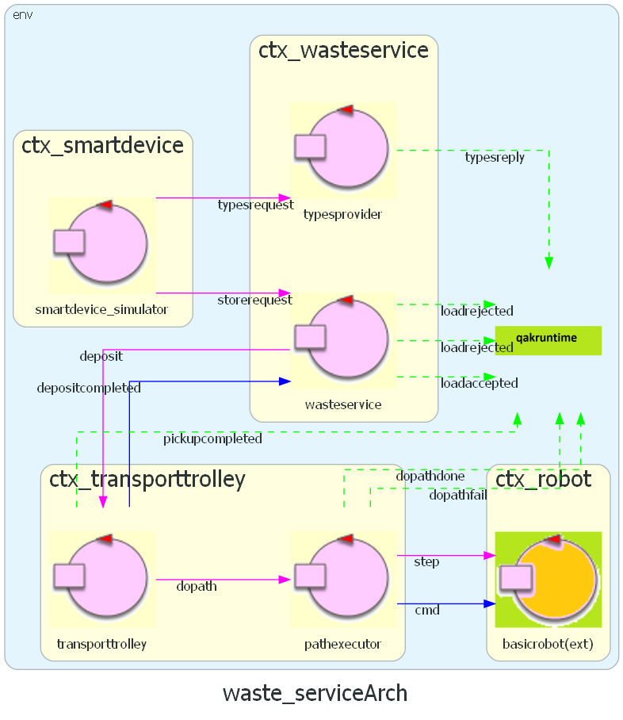

Problem Analysis
Logical Architecture from Sprint1
 QAK model: waste_service.qakDefects Analysis
This bug requires further investigations for us to understand how the Flutter framework translates and treats the Dart TCP sockets code.
we could add one more SmartDevice-WasteService interaction before the store request: by introducing a new actor, the SmartDevice could ask if there is enough space for the deposit, and after getting the reply, if it's positive it would send a store request.
- There's a small window of time in which another SmartDevice could send the store request "stealing" the priority for the deposit.
- The loadrejected reply to the storerequest would lose value, since we know for sure that a storerequest can be sent only if a SmartDevice knows there's enough space.
Sprint2 Software
The Sprint 2 software will be the product of the analysis of problems related to the Raspberry Pi. We will analyze the main problems of the 4th requirement, and discuss the possible solutions and their differences.However, that doesn't necessarily mean that the Raspberry node needs to be a real device. In fact, the Raspberry might be simulated as well, for example to ease the testing of its software and the integration with the rest of the distributed system.
Problem: where will the Raspberry Pi software be placed and execute? How is it going to interact with the rest of the system, and with which components?
NB: the customer doesn't specify if the single components needs to be placed on the same device, but for the moment, for simplicity reasons we assume they will be (same node, same context).
Software Provided by the Customer
The customer provides the project it.unibo.radarSystem22.domain
which implements a RadarSystem using concrete or simulated devices (Led/Sonar), implemented by following
software engineering principles and design patterns.
In particular, it exposes interfaces:SonarModel
and LedModel , factories, ...) make it possible to separate components from
their actual implementation, which could be whether real or virtual (simulated).
In fact, what we are most interested in about this project, is the possibility to choose which implementation to use, through the configuration classDomainSystemConfig :
that configuration can be loaded from a file, and that enables the project to be customizable
even after the deployment phase.
In particular, it exposes interfaces:
-
for the
Sonar public interface ISonar extends IDevice{ public void activate(); public void deactivate(); public IDistance getDistance(); public boolean isActive(); } -
for the
Led public interface ILed extends IDevice{ public void turnOn(); public void turnOff(); public boolean getState(); } -
for the concept of the
Distance public interface IDistance { public int getVal(); public String toString(); }
radarSystem22.domain project is that the
different layers of abstraction (interfaces, the abstract classes In fact, what we are most interested in about this project, is the possibility to choose which implementation to use, through the configuration class
Sonar
What's the purpose of the sonar? Which components depend on it and where will them be located?NB: The sonar is an input alarm device, which is related to the stop/resume functionality.
- SonarAlone.c - a small program which performs detections each time interval (30ms);
- it.unibo.radarSystem22.domain;
-
unibo.sonarqak22 - a project which
uses different actors to obtain the sonar data from a simulated or concrete device, implemented using both coded actors
and QAK actors, and without exploiting the it.unibo.radarSystem22.domain functionalities.
Moreover, this project make use of the "Actors as streams" feature of QAK, which allows the actors of a pipeline, which are subscribed to the first one, to receive one after the other in cascade, local events (or, more in general, messages). That feature could be extremely helpful in reducing the traffic load, since we don't know a priori which will be the network capacity nor the bandwidth.
Reasons: the possibility to have simulated devices makes it easier to test the system without having to deploy on a real Raspberry Pi. The project already implements the features we need to satisfy the requirements, we just have to integrate it with the rest of the system. The project structure makes it easier to extend the project with additional features/functionalities.
- Send a message for each input data detection. That solution is the most flexible and general purpose to implement: we send everything the sonar knows and let the Waste Service do the rest. However, that generates an increase in bandwidth consumption, especially in the case the sonar performs detections rapidly, and that could cause greater problems if the service grows in size (flexible but not much scalable).
- Send a message only when the state changes. That greatly reduces the number of exchanged messages, saving bandwidth, and directly addresses the requirement.
- Hybrid approach where we send every input data detection to a middle component, which acts like a controller: it receives a sequence of distances, and mantains the current state of the alarm (ON/OFF). Then, each time the state changes, propagate a message to other contexts or to the actor which will detect the stop. The bandwidth consumption depends on whether the sonar and the component are on the same or different nodes: if the node is the same, then the only messages that are propagated are the ones on the state change.
stop and resume events to the system.
Reasons: the core-business doesn't care about the distance at all. In fact, from the Waste Service perspective, the sonar acts as a simple switch ON/OFF, which indicates if the system is in a state of alarm (distance < DLIM) or not. Therefore, the only information needed to completely address the customer requirement, is
Stop/Resume
Considerations: our robot moves in steps in the area, since the room is represented as a M x N matrix.
If we consider a real situation, the stop could be caused by an emergency or could be due to dangerous circumstances. Therefore, we would need to stop the robot instantly.
Cons: those calculations based on execution time are never 100% accurate, due to many factors (CPU/resources, network latency, unpredictable jitter, etc.). Moreover, in case the step total duration gets shortened or extended, the whole map representation could be affected, and cause it not to be accurate anymore.
Reasons: the robot position gets updated only when a step is completed, so it might be easier to make the steps not interruptible; since our map has specific positions, identified by discrete coordinates, that solution can prevent the possibility of the robot to be located in between two different cells, and also reduces the possibility to get an out of sync situation between the robot position inside the map representation and its actual real position.
depositdopathTransition t# whenEvent stop -> state_stop) in those states that can be interrupted.
Reasons: ideally we want to act on the transport trolley, but it's busy waiting for the pathexecutor reply, until the path is completed. Therefore, since the pathexecutor is the one responsible for scheduling the steps, to interact with it is the best solution, also considering the fact that it's located in the Transport Trolley context, acting like an actuator for the trolley.
Led
What's the purpose of the led? Which components does it depend on? What information does it need?NB: The Led is an output warning device, which is responsible for giving real-time information about the state of the transport trolley, and therefore it needs to access its data.
trolleystateprovider
TROLLEY_STATE := HOME | MOVING | PICKUP | DUMP | STOPPED
LED_STATE := ON | BLINKING | OFF
Reasons:
- Making the trolley state COAP observable could facilitate the the implementation of the last requirement.
- separating the 2 components makes sense, since they could be located in different contexts and therefore in different nodes;
- separating the 2 states makes the system more modular and ease the extension through new features;
Interactions
New Messages
| Message | Type | Sender | Receiver | Description |
|---|---|---|---|---|
| sonar_data | Dispatch | SonarDevice | AlarmController |
Contains the distance |
| stop | Event | AlarmController | PathExecutorBCR |
Indicates that the TransportTrolley activity must be stopped |
| resume | Event | AlarmController | PathExecutorBCR |
Indicates that the TransportTrolley activity can be resumed |
| coapUpdate | Dispatch | COAP framework | TrolleyStateProvider | Built-in dispatch to notify when a COAP observed resource gets updated. It contains 2 parameters: the resource name, and the associated value. |
| trolley_state_changed | Dispatch | TrolleyStateProvider | LedController | Message that notifies the LedController (component that communicate with the Led device) that the Transport Trolley has entered a new state. |
Logical Architecture
The Sprint2_ProblemAnalysis project aims to address the main issues of the warning/alarm features and give a first solution and implementation, usingTest Plans
| Test | Involved Actors | Description | Files |
|---|---|---|---|
| Stop/Resume Test |
|
We check if the TransportTrolley actor:
|
QAK: test_stop_resume.qak Test: TestStopResume.kt |
| Trolley State Test |
|
We check if the Led state correctly gets updates when
the TransportTrolley changes:
|
QAK: test_led_state.qak Test: TestLedState.kt |
Execute Test
To execute all the tests, run the following command:
./gradlew test